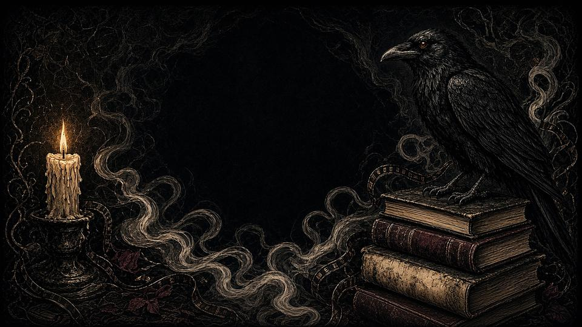
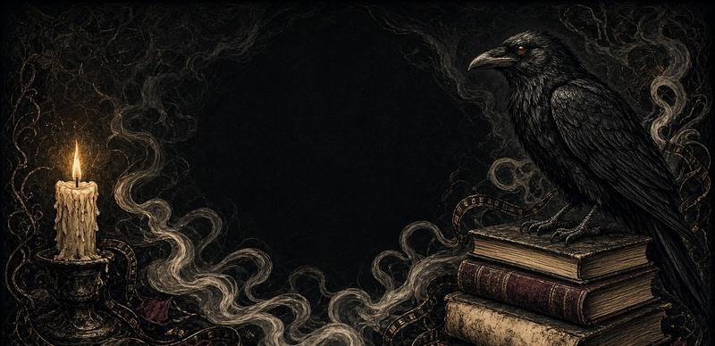

A raven, a candle, a page
EdgarAllanMusic
Classic books, big thinkers, ancient tales, turned into sound.
I · The shelf
Discography
EPs and singles from 2026. Each one starts with a book, a thinker, or an old tale.
A listening link appears only where a Spotify page was confirmed. Everything already up lives on the artist page (opens in a new tab).
Opening the catalog…
II · After the take
Podcasts
Music.txt is the show on Spotify that walks through how the EPs were made.
III · The margin
About

EdgarAllanMusic keeps a candle beside the old books and lets them speak in sound. Orwell’s glass city. Hesse’s river. Dante’s mountain. The second self in Dostoevsky. Nietzsche with the hammer raised. Freud’s couch. Pharaoh’s dream, and the man brought in to read it.
Each record is a translation: page to pulse, argument to song. Classic books, big thinkers, ancient tales, turned into sound and left in a darker key.
A raven watches the margin. The flame does the rest.
How it’s made
The pieces are written and shaped with contemporary instruments. Some of that work is done with generative tools: a machine in the room with the writer. The subject remains the tale. On Music.txt, a few of the EPs are taken apart afterward, from the first idea to the last take.